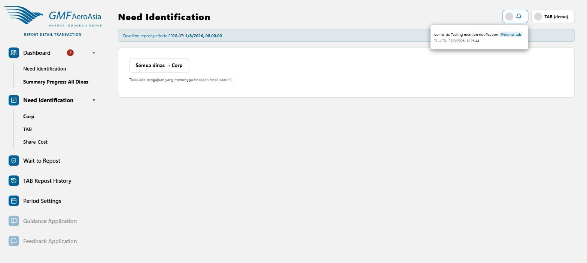

Bell icon — notifikasi mention & balasan komentar
Ikon lonceng di kanan atas, semua halaman

- Angka merah di sebelah ikon lonceng menunjukkan jumlah notifikasi belum dibaca.
- Klik ikon lonceng untuk membuka daftar notifikasi terbaru — setiap entri menunjukkan siapa yang berkomentar, isi komentar (dengan mention di-highlight biru), pasangan dinas terkait, dan waktu.
- Notifikasi muncul kalau Anda di-@mention langsung di komentar, atau kalau Anda adalah PIC dinas target dari pasangan yang baru dapat komentar/keputusan.